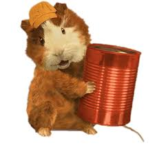

Linny is a guinea pig and the leader of the Wonder Pets. While on missions, she wears an orange cap and blue cap. Linny also often offers information about the different animals and habitats the Wonder Pets encounter. She' normally reminds the group about teamwork and provides encouragement and praise to the group. She is also the driver of the Flyboat. At the end of every Wonderpet adventure, Linny often states, "This calls for some celery!" and carries it with her for the end of successful missions.